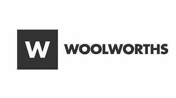
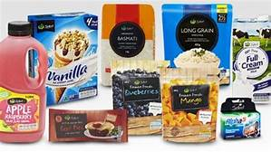

WOOLWORTHS
Woolworths (colloquially known in Australia as "Woolies") is an Australian chain of supermarkets and grocery stores owned by Woolworths Group. Founded in 1924, Woolworths today is Australia's biggest supermarket chain with a market share of 33% as of 2019. Woolworths specialises in groceries (vegetables, fruit, meat, packaged foods, etc.), but also sells magazines, DVDs, health and beauty products, household products, pet and baby supplies, and stationery. As of the end of June 2020, there were 987 Woolworths supermarkets and 64 Woolworths Metro convenience stores. Woolworths Online (formerly HomeShop) is a "click and collect" and home delivery service for Woolworths supermarkets.Woolworths Limited (now Woolworths Group) was founded on 22 September 1924 by five Australian entrepreneurs – Percy Christmas, Stanley Chatterton, Cecil Scott Waine, George Creed and Ernest Williams. The first store was opened on 5 December 1924 in Pitt Street of Sydney's Imperial Arcade, called "Woolworths Stupendous Bargain Basement". Following the first store there were only 29 shareholders and there was little interest to accelerate the brand's growth. However, as trading continued and shareholders brought more capital, the dividends paid by the company increased from 5% to 50% after its third year of operation. Consumer interest in the company grew after December 1924, as more branches of the store were established across Australia. Woolworths stores began selling a variety of goods, claiming the lowest prices as well as money back guarantees.[6] At the forefront of innovation in Australia, Woolworths stores became the first variety store in the world to install receipt printing cash register machines in 1926. The second Woolworths supermarket was opened on 6 August 1927, on Queen Street in Brisbane.The first Woolworths store in New Zealand was opened in 1929, but the chain has since been rebranded as Countdown (see also Woolworths (New Zealand supermarket chain). Following the opening of the Hobart store in 1940, Woolworths had a store in every state in Australia. With the company and its stores running successfully, Woolworths began to experiment with expanding their grocery range – more stores began stocking fresh fruits and vegetables and a larger range of food. The first self-service store in Beverly Hills, Sydney was opened in 1955.In 1958 the first supermarket was opened at Dee Why, followed by the first purpose built supermarket at Warrawong in 1960. As Woolworths gradually focused more on groceries, the first Big W department store was opened in 1976 at Tamworth, New South Wales. In 2018, Woolworths Group stopped providing single-use plastic bags during checkout at the same time as Coles Supermarkets, bringing them in line with Australia's third-biggest supermarket, Aldi.[11] In the following three months, Australian's plastic bag use dropped by 80%, leading to 1.5 billion fewer bags going to landfill. Woolworths also committed to removing 180 tonnes of plastic packaging from their products in 2018.
